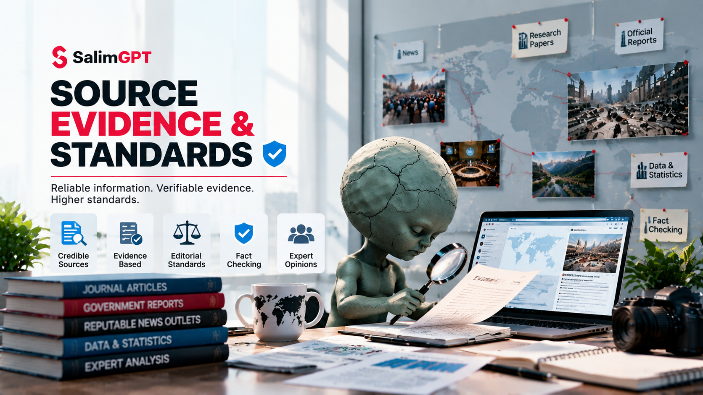

Who Created It?
Identify authorship, institutional origin, publication responsibility or other information needed to understand where the material came from.
HOW WE WORK
SalimGPT evaluates sources according to the claims they are being used to support. Evidence is considered for relevance, origin, context, limitations and whether important claims can be independently checked.
A source is not considered reliable merely because it appears authoritative, is widely repeated or is easy to find. Human review considers what the source actually establishes and what it does not.

CORE STANDARD
A source can be credible and still be unsuitable for a particular statement. Evidence may describe a different time period, geography, population, definition, event or research question.
SalimGPT therefore considers the connection between the source and the specific documentary claim, rather than treating source reputation alone as sufficient.
The stronger or more consequential the claim, the more important it becomes to examine whether the evidence is direct, relevant, independently supported and presented with appropriate context.
EVIDENCE STANDARDS
These questions help determine whether a source is appropriate for the role it is expected to play in a documentary.
Identify authorship, institutional origin, publication responsibility or other information needed to understand where the material came from.
Separate what the source directly establishes from conclusions, interpretations or assumptions that go beyond the material itself.
Check whether the source addresses the same subject, period, geography, population or definition as the documentary claim.
Consider the method behind the evidence, including how data, observations, records or conclusions were generated.
Seek independent support where appropriate instead of treating repeated versions of one underlying source as separate confirmation.
Identify missing information, uncertainty, scope limits, potential bias, methodological constraints or other factors that affect interpretation.
Match the wording and confidence of the documentary to what the source and wider evidence can reasonably support.
SOURCE TYPES
Neither category is automatically sufficient by itself. The useful combination depends on the documentary question and the claim being examined.
Primary material can include original records, direct documentation, contemporary material, first-hand accounts, datasets or other evidence produced close to the event or question being studied.
Being primary does not automatically make a source complete, unbiased or accurate. It still requires assessment and context.
Secondary sources can include research, reporting, books, reviews, scholarly analysis and other material that interprets or synthesizes evidence.
Their value depends on methodology, evidence use, expertise, transparency and relevance to the documentary question.
RELEVANCE BEFORE AUTHORITY
A high-quality source can still be misused if its findings are applied outside the conditions it actually examined.
For example, evidence from a different population, location, period or research design may provide useful context without directly proving a claim about another setting.
SalimGPT therefore treats relevance as part of evidence quality rather than assuming that authority alone makes a source suitable.
CORROBORATION
Several sources can repeat the same underlying statement, dataset, press release or earlier report. Research should examine whether apparent confirmation comes from genuinely independent evidence.
Identify the earliest or underlying source where possible instead of relying only on later repetition.
Compare evidence that does not simply depend on the same source chain when the claim is important enough to require corroboration.
When credible sources conflict, examine definitions, dates, methods and underlying evidence before deciding how to present the disagreement.
If independent evidence cannot resolve a question, the documentary should preserve that uncertainty.
ATTRIBUTION
Some statements are not established facts but rather positions, interpretations, allegations, estimates or conclusions made by identifiable people, institutions or sources.
In those situations, clear attribution can help audiences understand who is making the claim and avoid presenting a contested or source-specific statement as SalimGPT’s independent conclusion.
DATA & NUMBERS
Numbers can appear precise while still being misunderstood. Documentary use of data should consider what was measured, when, where, by whom and under what definition.
Percentages, rates, rankings, averages and totals can change meaning depending on the denominator, comparison period, sample, population or method used to generate them.
What exactly is being counted or measured?
What population or total is a percentage based on?
Which period does the number describe?
Are the figures being compared produced on a consistent basis?
UNCERTAINTY & LIMITATIONS
Missing records, limited samples, conflicting accounts, uncertain chronology and incomplete data can all limit what a documentary can responsibly conclude.
Some information may not be available or recoverable from the evidence currently accessible.
Evidence may exist but apply only to a narrow setting, sample, period or type of claim.
Credible sources may disagree, requiring the disagreement itself to be explained.
Some questions remain open after review and should be presented without unsupported closure.
AI & EVIDENCE
AI systems can assist research organization, discovery, comparison, drafting and other production tasks, but their outputs can contain unsupported claims, fabricated citations or missing context.
Information obtained through AI assistance therefore needs verification against appropriate underlying sources before it can support documentary claims.
HIGH-CONSEQUENCE CLAIMS
Claims involving serious allegations, personal reputation, safety, legal matters, health, public affairs or other high-consequence subjects may require additional verification, careful attribution and more precise wording.
The documentary should not use stronger language than the available evidence can justify.
FROM EVIDENCE TO REVIEW
A source may be appropriate during research and still be misquoted, overstated, mistranslated, taken out of context or represented incorrectly during production.
Fact-checking reviews how the evidence appears in the final script, narration, graphics, captions and other documentary elements.
STANDARD IN PRACTICE
SalimGPT’s source standard focuses on whether evidence is relevant to the claim, whether important limitations are understood, whether independent support is available and whether the final wording accurately represents the material.
Source quantity alone does not establish reliability, and one highly relevant source may sometimes be more useful than many sources that merely repeat the same unsupported statement.
HOW WE WORK
How research, evidence and storytelling connect.
How documentary research is organized and reviewed.
How claims are reviewed against supporting evidence.
Principles guiding editorial judgment and publication.
How AI assistance is separated from editorial authority.
How published material can be reviewed and corrected.